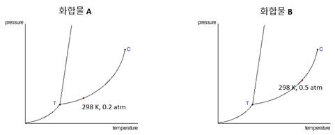

문제 3
1. 아래 그림은 화합물 A와 B의 상평형 그림이다. 물음에 답하시오. (가로축은 온도, 세로축은 압력, K는 절대온도, atm은 기압)

가. 동일 온도에서 액체 상태인 화합물 A와 B 중 표면장력이 더 큰 화합물은 무엇인가?
나. 액체 상태로 존재하는 두 화합물을 A와 B를 압력을 1 기압(atm)에서 0.2 기압(atm)으로 낮췄다. 이 때 화합물 A와 B에는 어떠한 변화가 일어나는지 설명하시오. (단, 온도는 298 K로 일정하다.)
2. 섭씨 25도, 1기압에서 아연(Zn)은 충분한 양의 묽은 염산과 완전히 반응하여 수소 기체를 발생한다.
가. 이 반응의 화학 반응식을 적어보자.
나. 주어진 반응에서 산화가 된 물질은 무엇이고, 환원이 된 물질은 무엇인지 나타내시오.